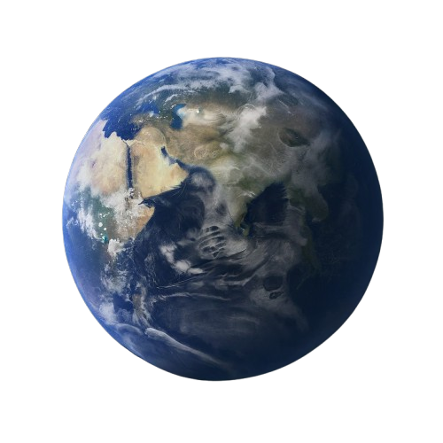

Sunrise Observation
Our reasearch on phenomenon of leap year 2024 by observation
Observing the Leap Year and Solar Analemma Our research at SMKDHAB involves a year-long observation of the leap year phenomenon through a scientific approach. One key aspect of our study is observing the solar analemma, a fascinating pattern that results from tracking the position of the Sun in the sky at the same time each day over the course of a year. By taking monthly photographs of the sunrise, we document the gradual shift in the Sun’s position, creating a figure-eight shape known as the analemma. This visual representation captures the Earth's tilt and elliptical orbit, demonstrating the precise movements of celestial bodies.
The leap year is a perfect example of how astronomical knowledge influences our everyday lives. The extra day added every four years corrects the discrepancy between the solar year and the calendar year, as Earth's orbit around the Sun takes about 365.25 days. Without leap years, seasons would gradually shift out of sync with our calendar.
The solar analemma, which we study as part of this research, further reinforces these astronomical principles. The analemma occurs due to two key factors:
The tilt of the Earth's axis (about 23.5 degrees), which creates the changing seasons. The elliptical shape of Earth's orbit, which means the planet moves faster when it is closer to the Sun and slower when it is farther away. These studies not only teach students the natural laws governing the world but also serve as a reminder of the remarkable precision with which Allah SWT has created the universe. Observing these natural patterns brings attention to the great works of Allah SWT, helping students gain a deeper spiritual connection to the wonders of the world while developing a stronger understanding of scientific principles.
Equation of the ellipses
The distances between celestial bodies, particularly within our solar system, can be calculated using Kepler's Laws of Planetary Motion. These laws, formulated by Johannes Kepler in the early 17th century, describe the orbits of planets around the Sun and provide a mathematical framework for understanding their motions.
Formula
The distance d from the Sun to a planet can be calculated using the formula:
Variables
- d: Distance from the Sun (in astronomical units, AU)
- a: Semi-major axis of the planet's orbit (in AU)
- e: Eccentricity of the planet's orbit (dimensionless)
- θ: True anomaly (angle in radians)
Explanation
This formula represents the elliptical orbit of a planet around the Sun. The semi-major axis (a) is the average distance from the Sun to the planet, while the eccentricity (e) measures how much the orbit deviates from a perfect circle. The true anomaly (θ) helps to determine the planet's position in its orbit at a specific time.
Example
For example, to calculate the distance of Earth from the Sun:
- Assume
a= 1.0 AU - Assume
e= 0.0167 - Assume
θ= 0 radians (at perihelion)
Using the formula:
d = 1.0 × (1 - 0.0167 × cos(0)) = 0.9833 AUSun-Earth Distance Calculator
function measureDistance() {
let n = 1;
let distances = [];
for (let month of MONTHS) {
let O = 2 * Math.PI * (n - 1) / 12;
let distance = a * (1 - e ** 2) / (1 + e * Math.cos(O));
n += 1;
distances.push(distance);
}
return distances;
}
function displayResults(distances, unit, outputId) {
let output = '';
for (let i = 0; i < distances.length; i++) {
output += `${MONTHS[i]}: ${distances[i]} ${unit}
`;
}
document.getElementById(outputId).innerHTML = output;
}
function calculateDistancesKm() {
const distances = measureDistance();
displayResults(distances.map(d => (d * 1e6).toFixed(2)), 'million km', 'outputKm');
}
function convertKmToAU(distances) {
let auValues = [];
for (let distance of distances) {
let au = (distance * 1e6) / AU; // convert km to AU
auValues.push(au.toFixed(5));
}
return auValues;
}
function displayResults(distances, unit, outputId) {
let output = '';
for (let i = 0; i < distances.length; i++) {
output += `${MONTHS[i]}: ${distances[i]} ${unit}
`;
}
document.getElementById(outputId).innerHTML = output;
}
function calculateDistancesAU() {
const distances = measureDistance();
const auValues = convertKmToAU(distances);
displayResults(auValues, 'AU', 'outputAU');
}
function convertKmToLY(distances) {
let lyValues = [];
for (let distance of distances) {
let ly = (distance * 1e6) / LIGHT_YEAR; // convert km to light years
lyValues.push(ly.toFixed(10));
}
return lyValues;
}
function displayResults(distances, unit, outputId) {
let output = '';
for (let i = 0; i < distances.length; i++) {
output += `${MONTHS[i]}: ${distances[i]} ${unit}
`;
}
document.getElementById(outputId).innerHTML = output;
}
function calculateDistancesLY() {
const distances = measureDistance();
const lyValues = convertKmToLY(distances);
displayResults(lyValues, 'LY', 'outputLY');
}
{kind=link}
Using Python Programming Language
Incorporating programming languages like Python and JavaScript allows us to automate calculations related to planetary distances based on Kepler's laws. By using these programming concepts, we can easily manipulate data, perform calculations, and visualize results in a dynamic and interactive manner.
Python is an excellent language for scientific computing due to its simplicity and the availability of powerful libraries. Below is an example of how you can calculate the distances of planets from the Sun using Python.
By using programming languages like Python and JavaScript, we can automate the calculations of planetary distances based on Kepler's laws. This approach not only enhances our understanding of celestial mechanics but also allows us to visualize data effectively. Whether through simple calculations or advanced visualizations, coding provides powerful tools to explore the fascinating distances within our solar system.

adafaf
adfadf
adfad
At our perspective SMKDHAB
| Month | Date | Time | Distance (km) | Distance (AU) | |
|---|---|---|---|---|---|
| January | 2-1-2024 | 07:26 AM | 147.10168 | 0.98331 | |
 |
Febuary | 2-2-2024 | 07:46 AM | 147.42610962880178 | 0.98548 |
| March | 1-3-2024 | 07:26 AM | 148.31980766202207 | 0.99146 | |
| Aprill | 1-4-2024 | 07:18 AM | 149.55827805599998 | 0.999749 | |
 |
May | 1-5-2024 | 07:18 AM | 150.81760505823624 | 1.00815 |
 |
June | 1-6-2024 | 07:26 AM | 151.75302503484792 | 1.01441 |
| July | 1-7-2024 | 07:32 AM | 152.09831999999997 | 1.01671 | |
 |
August | 1-8-2024 | 07:32 AM | 151.75302503484792 | 1.01441 |
| September | 1-9-2024 | 07:22 AM | 150.81760505823624 | 1.00815 | |
 |
October | 1-10-2024 | 07:26 AM | 149.55827805599998 | 0.99974 |
| Planet | Distance (km) | Distance (AU) | Distance (ly) | Light Travel Time | Time | Planet Image |
|---|---|---|---|---|---|---|
| Mecury | 57 | 0.38 | 6.00875e-6 | 3.2 minutes | 9.4 days |  |
| Venus | 108 | 0.72 | 1.1385e-5 | 6.1 minutes | 17.8 days | |
| Earth | 149 | 1.00 | 1.5813e-5 | 8.5 minutes | 24.5 days |  |
| Mars | 228 | 1.52 | 2.4035e-5 | 12.9 minutes | 37.5 days | |
| Jupyter | 780 | 5.20 | 8.2225e-5 | 44.2 minutes | 128.5 days | |
| Saturn | 1437 | 9.58 | 0.0001514838 | 1.4 hours | 236.7 days | |
| Uranus | 2871 | 19.14 | 0.00030265139 | 2.7 hours | 1.3 years | |
| Neptune | 4530 | 30.20 | 0.0004775377 | 4.3 hours | 2.0 years | |
| Pluto | 5909 | 39.5 | 0.00062 | 5.5 hours | -0.97 |